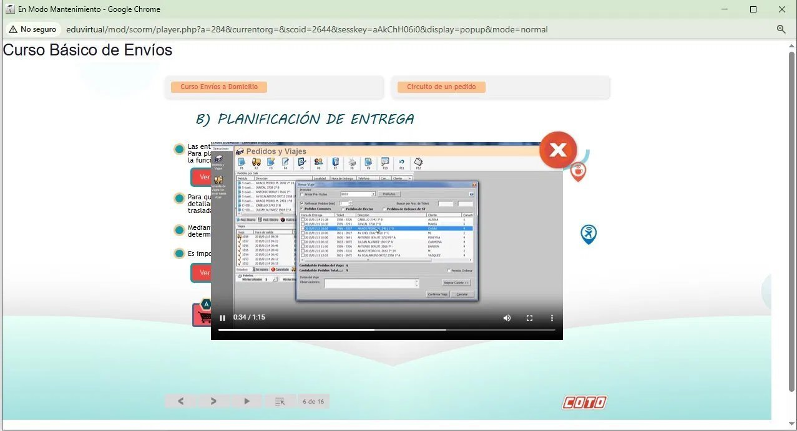

El comienzo
El primer trabajo.
La primera cámara.
Era 2019. Me había recibido en Comunicación Social y este era mi primer trabajo completo, con un puesto que tenía mi nombre. Entré como junior con una tarea específica: actualizar los cursos e-learning. Todos sabían que el camino era lo audiovisual — lo que llegaba, lo que se imponía — y hacia ahí había que ir.
Lo que encontré fue esto: cursos sin sistema, sin identidad, sin criterio unificado. El e-learning existía, pero no funcionaba como algo pensado.

01
Plataforma anterior
Moodle sin identidad · "Centro de Estudios"
02
Diseño de curso anterior
Avatar genérico · sin marca propia

03
Video sin producción
Screengrab del sistema · sin edición
Desliza para ver más